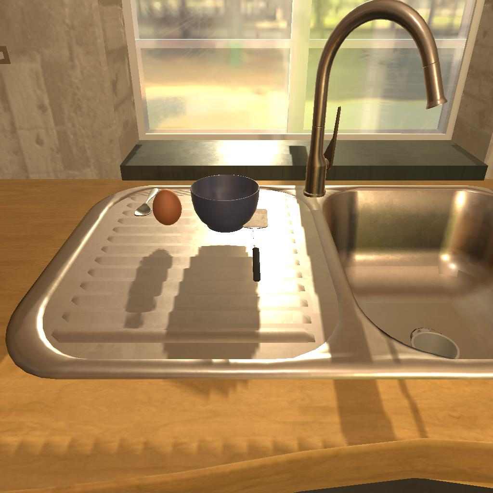

---------------------------------------------------------task: 26---------------------------------------------------------
--------------------------------------------------------------------------------------------------------------------------------------------------------------------
--------------------------------------------------------------------------------------------------------------------------------------------------------------------
Step:--------------------------------------------------------------------------0-------------------------------------------------------------------------------
----------------------------------------
VLM Prompt:
Image1:
**Instruction**
1. Analyze the provided images to identify all visible household objects and compare the difference between images (e.h. whether the object is opened or not and taken on hand or not), focusing on those relevant to the task description "find two kettle and put them in cabinet."
2. Use the analysis of images and the task hint "The agent must find an object of the desired type, pick it up, find the correct location to place it, put it down there, then look for another object of the desired type, pick it up, return to previous location, and put it down there with the other object." to answer the question: what is the most reasonable action in the choices for the task description "find two kettle and put them in cabinet"?
3. Decide and write the answer using the template: The answer is: (i): , where i is the real number. If there is no desired object in images, search every place based on **Initial Observation** to find the object. And if no one is exactly correct, choose a similar answer.
**Initial Observation**
You are in the middle of a room. Looking quickly around you, you can see countertop (1), coffeemachine (1), cabinet (1-4), drawer (1-8), sink (1), sinkbasin (1), garbagecan (1), fridge (1), microwave (1), dresser (1), sidetable (1)
**Answer Choices**
(1): go to countertop 1
(2): go to coffeemachine 1
(3): go to cabinet 1
(4): go to cabinet 2
(5): go to drawer 1
(6): go to sink 1
(7): go to sinkbasin 1
(8): go to cabinet 3
(9): go to garbagecan 1
(10): go to cabinet 4
(11): go to drawer 2
(12): go to fridge 1
(13): go to microwave 1
(14): go to dresser 1
(15): go to sidetable 1
(16): go to drawer 3
(17): go to drawer 4
(18): go to drawer 5
(19): go to drawer 6
(20): go to drawer 7
(21): go to drawer 8
**Answer**
Let's think step by step by following the instructions.
----------------------------------------
----------------------------------------
Original Response:
Image 1 does not show any kettles, so we cannot take action based on this image alone.
Considering the task description "find two kettle and put them in cabinet," the most reasonable action would be to search for the kettles in the locations where they are likely to be found. Based on the initial observation, kettles are not typically stored on countertops, in coffeemachines, in sinkbasins, in garbage cans, in fridges, in microwaves, on dressers, or on sidetables. They are more likely to be found in cabinets or drawers.
Therefore, the answer is: (3): go to cabinet 1. If no kettle is found there, the agent should continue to search in other cabinets or drawers based on the initial observation.
----------------------------------------
----------------------------------------
>>> Refine Original VLM Response and Get Pure Action: No action
----------------------------------------
-----------------------------------------------------------------
Running time: 7.242764472961426 seconds
Total Money: 13.247770000000001
-----------------------------------------------------------------
-----------------------------------------------------------------
Text Observation:Nothing happens.
-----------------------------------------------------------------
UNSUCCEED